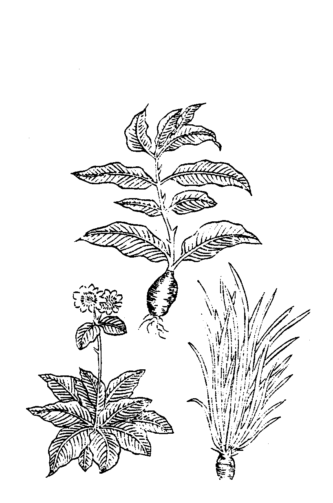

Zhīmǔ · Anemarrhena rhizome知母
Anemarrhenae Rhizoma · Heat-clearing herbs: herbs that clear heat and drain fireAnemarrhenae Rhizoma · 清热药·清热泻火药

.jpg){kind=link}


- Flavour · nature性味
- bitter, sweet; cold苦、甘，寒
- Channels归经
- Lung, Stomach, Kidney肺、胃、肾经
- Direction升降浮沉
- Bitter-cold to clear and drain, sweet-cold to moisten; it clears heat and drains fire while nourishing yin and moistening dryness, acting on lung heat above, stomach fire in the middle and kidney yin below; salt-frying leads the action downward and focuses it on nourishing yin and lowering fire苦寒清泄、甘寒滋润，清热泻火与滋阴润燥并用；上清肺热、中清胃火、下滋肾阴；盐炙后引药下行，专于滋阴降火
- Toxicity毒性
- Non-toxic无毒
- Dose (pharmacopoeia)用量（药典）
- 6–12 g (ceiling 12 g)（上限 12 克）
Decocted; raw to clear heat and drain fire, salt-fried to nourish yin and lower fire煎服；清热泻火宜生用，滋阴降火宜盐炙 - Pregnancy孕期
- Caution in pregnancy孕妇慎用 The pharmacopoeia and textbook list no pregnancy restriction, but that does not prove it is safe in pregnancy; the Health Canada TCMI monograph requires labels to say not to use during pregnancy or breastfeeding, so do not self-treat in pregnancy or while breastfeeding, and leave any use to a licensed practitioner.药典与教材未列孕期禁忌，但这不等于已证明孕期安全；加拿大卫生部 TCMI 专论要求产品标注孕期或哺乳期勿用，因此孕期、哺乳期不要自行服用，需用须由持照中医师判断。
- Health Canada加拿大卫生部
- Health Canada: monograph加拿大卫生部：有专论 The Health Canada NHPID monograph on Traditional Chinese Medicine Ingredients (TCMI), dated May 29, 2026, includes Anemarrhena asphodeloides (Zhi mu, Rhizoma Anemarrhenae) in Table 1, general medicinal ingredients. It requires every product to carry statements: do not use during pregnancy or breastfeeding; ask a health professional before use if taking prescription drugs, having a serious condition or an acute infection; stop use and see a health professional if symptoms persist or worsen. In this search record the herb appears only in Table 1, with no Table 3 or Table 4 restriction seen (to be verified).加拿大卫生部天然保健品数据库的传统中药成分（TCMI）专论（2026 年 5 月 29 日）收录 Anemarrhena asphodeloides（Zhi mu，Rhizoma Anemarrhenae），列在表 1（一般药用成分）。专论要求所有产品标注：孕期或哺乳期勿用；服处方药、有严重疾病或急性感染者用前问医务人员；症状持续或加重即停用就医。本次检索记录中知母仅见于表 1，未见表 3、表 4 的专门限制（待核）。
- Conservation资源与保护
- Supply comes from both wild and cultivated plants; wild stocks have declined with long-term digging and the domestic protection grade is still to be verified; no CITES listing was found.药材来自野生与栽培两方面，野生资源因长期采挖有所减少，国内保护级别待核；未见国际贸易公约（CITES）管制。
- Source来源
- Anemarrhena asphodeloides Bge.. Dried rhizome of Anemarrhena asphodeloides, lily familyAnemarrhena asphodeloides Bge.（知母）。百合科植物知母的干燥根茎
Traditional actions and indications功效与主治（传统）
🏛 Traditional statements, not efficacy claims; the modern evidence is graded further down.以下为传统说法，不是疗效主张；现代证据见下文分级。
- Clears heat and drains fire清热泻火
- Nourishes yin and moistens dryness滋阴润燥
Febrile disease from external contraction with high fever and thirst; dry cough from lung heat; bone-steaming tidal fever; internal-heat wasting-thirst; constipation from intestinal dryness.外感热病、高热烦渴；肺热燥咳；骨蒸潮热；内热消渴；肠燥便秘。
How to recognise it怎么认
Growing植株 A perennial herb with a thick, creeping rhizome covered in yellow-brown fibres of old leaf bases; stiff, linear leaves in a basal tuft, roughly 15–60 cm long; a flower stalk rising from the tuft with a spike of white to pale purple flowers in spring and summer, followed by capsules.多年生草本；根茎横走、粗壮，外被黄褐色残留叶基纤维；叶基生、丛生，线形，质硬，长约 15–60 厘米；花葶从叶丛中抽出，穗状花序，花白色至淡紫色，春夏开放；结蒴果。
Decoction pieces饮片 The crude drug (hairy Zhi Mu) is a long, slightly curved, slightly flattened rhizome, occasionally branched; yellow-brown to brown, with a groove on the upper face and closely set ring-shaped nodes bearing dense yellow-brown leaf-base remnants, the lower face humped and slightly wrinkled with dotted root scars; hard but brittle, breaking to a yellowish-white face; faint smell, slightly sweet and a little bitter, sticky when chewed. Slices are irregular thick rounds with a yellowish-white to yellow cut face and a few leaf-base fibres. Peeled Zhi Mu is yellowish-white on the surface; salt-fried slices are darker with scorch marks and a faintly salty taste.药材（毛知母）呈长条状，微弯曲，略扁，偶有分枝；表面黄棕色至棕色，上面有一凹沟，具紧密排列的环状节，节上密生黄棕色残存叶基，下面隆起略皱缩，有点状根痕；质硬易折断，断面黄白色；气微，味微甜、略苦，嚼之带黏性。饮片为不规则类圆形厚片，切面黄白色至黄色，可见少量叶基纤维。知母肉表面黄白色；盐知母色泽加深，可见焦斑，味微咸。
No photo of the rhizome slices found on Commons (2026-11-25).缺知母饮片照（Commons 11-25 未检到）。
Processing炮制
- Raw Zhi Mu (sliced hairy or peeled rhizome)知母（生用，毛知母或知母肉切片）：: Bitter-cold and moistening; stronger at clearing heat and drains fire and generating fluids苦寒滋润，长于清热泻火、生津润燥
- Salt-fried Zhi Mu盐知母：: Salt-frying leads the action downward and focuses it on nourishing yin and lowering fire; commonly chosen for yin deficiency with flaring fire and bone-steaming fever盐炙引药下行，专于滋阴降火；常用于阴虚火旺、骨蒸潮热
Cautions and incompatibilities使用注意与配伍禁忌
Cold and moistening, it can loosen the bowels (the Shennong Bencao Jing passage warns that taking much 'makes people have loose stools'), so it is not suited to a weak spleen with loose stools (textbook position); avoid large amounts alone in yang deficiency with cold. The Health Canada TCMI monograph requires labels to say: do not use during pregnancy or breastfeeding; ask a health professional first if taking prescription drugs, having a serious condition or an acute infection; stop and seek care if symptoms persist or worsen. The pharmacopoeia dose is 6 to 12 g; individual prescriptions belong to a licensed practitioner.性寒质润，有滑肠之弊（《神农本草经》候选原文有「多服令人洩」），脾虚便溏者不宜用（教材口径）；阳虚寒证者不宜单用大量。加拿大卫生部 TCMI 专论要求标注：孕期或哺乳期勿用；服处方药、有严重疾病或急性感染者用前问医务人员；症状持续或加重即停用就医。具体用量按药典 6–12 克，个人方药请由持照中医师判断。
Interactions with medicines与西药的相互作用
The available sources contain no human evidence on Zhi Mu and Western drug interactions: the NCCIH herb-drug page covers examples such as ginseng and warfarin and does not mention Zhi Mu, and the Zhi Mu studies retrieved are lab, animal or review work on constituents, from which no interaction can be inferred. As Health Canada requires, anyone taking prescription drugs should ask a health professional first.本档可用来源中没有找到知母与西药相互作用的人体证据：NCCIH 的草药与药物相互作用页只涉及人参对华法林等例子，未提知母；检索到的知母研究都是成分的实验室、动物或综述性质，不能据此推断相互作用。按加拿大卫生部要求，正在服处方药者用前先问医务人员。
Modern research, graded现代研究（分级）
- E4 A review of the botany, ethnopharmacology, phytochemistry, pharmacology, toxicology and quality of Anemarrhena asphodeloides reports wide traditional use and diverse chemical constituents with marked biological activity; this is a review-level summary, not a human efficacy conclusion.一篇综述回顾知母的植物学、传统用途、化学成分、药理、毒理与质量，指出知母在传统医学中应用广泛，含多种化学成分并显示出明显的生物活性；这是综述层面的归纳，不是人体疗效结论。
- E4 Timosaponin AIII is a single constituent of the rhizome, and a review discusses it as a candidate anti-tumour compound; the subject is that isolated compound, not the sliced herb, and no clinical trial is involved.知母皂苷 AIII 是知母中的单体成分，综述把它作为抗肿瘤候选化合物来讨论；研究对象是该单体，不是知母饮片，也不是临床试验。
- E5 An in silico and in vitro study linked hippeastrine, a single constituent from Anemarrhena asphodeloides, to the HSP90/PI3K/Akt/mTOR pathway in oral squamous cell carcinoma cells; the subjects are an isolated compound and cultured cells, not the herb and not people.一项数据库、计算机模拟与体外细胞研究把知母中的单体成分 hippeastrine 与口腔鳞状细胞癌相关通路（HSP90/PI3K/Akt/mTOR）联系起来；研究对象是单体与培养细胞，不是知母饮片，也不是人体研究。
- E4 Mangiferin, a constituent isolated from Anemarrhena asphodeloides, was linked to MMP-9 expression and MEK and ERK signalling in UVB-irradiated hairless mice; this is an animal experiment on an isolated compound and does not carry over to the sliced herb or to people.芒果苷是知母中分离出的单体成分，在无毛小鼠的紫外线 UVB 照射实验中与 MMP-9 表达及 MEK、ERK 信号相关；这是动物实验，研究对象是单体，不能推及知母饮片或人体。
- E5 Constituents of the rhizome and their analogues were tested for cytotoxic activity in vitro and structure-activity relationships were briefly discussed; this is cell-level lab work and says nothing direct about the safety or toxicity of the sliced herb in people.对知母根茎化学成分及其类似物的细胞毒性做了体外测定，并简要讨论了结构与活性的关系；这是细胞层面的实验室研究，不等于知母饮片对人体的毒性或安全性结论。
In the classics古籍原文
「知母味苦寒無毒。主治消渴熱中，除邪氣，肢體浮腫，下水，補不足，益氣」——神农本草经
Shennong Bencao Jing (Divine Farmer's Materia Medica)
The Shennong Bencao Jing gives Zhi Mu as bitter, cold and non-toxic, for wasting-thirst and heat in the middle, and also records clearing pathogenic qi, limb swelling, draining water, supplementing deficiency and boosting qi.《神农本草经》记知母「味苦寒无毒」，主治消渴、热中，并提到除邪气、肢体浮肿、下水、补不足、益气。
「療傷寒久瘧煩熱脇下邪氣膈中惡及風汗内疸多服令人洩」——神农本草经疏
Shennong Bencao Jing Shu (Miao Xiyong's Commentary)
The closing line of the Zhi Mu entry in Miao Xiyong's Shennong Bencao Jing Shu says that taking much 'makes people have loose stools', an early warning that bitter-cold, moistening herbs can loosen the bowels, which echoes today's caution for a weak spleen with loose stools.缪希雍《神农本草经疏》所录知母条末句说「多服令人洩」，提示苦寒滋润之品多服可能滑泄，与今日脾虚便溏者慎用的提醒相呼应。
Where it is used: the web串联：它在哪些方里、连到哪里
Classical formulas (Shanghan, Jingui)经方（伤寒、金匮）
| Formula方 | Role角色 | Dose: original / today剂量：原书／今用 | Partners in the formula同方配伍 |
|---|---|---|---|
| White Tiger Decoction plus Cinnamon Twig白虎加桂枝汤 | Minister臣 | original text: see the Chinese original六两 | Shígāo (Gypsum)石膏 · Guìzhī (Cassia twig)桂枝 · Jing Mi (non-glutinous rice)粳米 · Gāncǎo (Licorice root)甘草 |
| White Tiger Decoction plus Ginseng白虎加人参汤 | Minister臣 | original text: see the Chinese original六两 | Shígāo (Gypsum)石膏 · Rénshēn (Ginseng (Asian))人参 · Jing Mi (non-glutinous rice)粳米 · Gāncǎo (Licorice root)甘草 |
| White Tiger Decoction白虎汤 | Minister臣 | original text: see the Chinese original六兩 | Shígāo (Gypsum)石膏 · Gāncǎo (Licorice root)甘草 · Jingmi (round-grained non-glutinous rice)粳米 |
| Cinnamon Twig, Peony and Anemarrhena Decoction桂枝芍药知母汤 | Minister臣 | original text: see the Chinese original四两 | Guìzhī (Cassia twig)桂枝 · Báisháo (White peony root)白芍 · Máhuáng (Ephedra herb)麻黄 · Fángfēng (Saposhnikovia root)防风 · Bai Zhu (white atractylodes)白术 · Fùzǐ (Aconite lateral root (processed))附子 · Sheng Jiang (fresh ginger)生姜 · Gāncǎo (Licorice root)甘草 |
| Sour Jujube Seed Decoction酸枣仁汤 | Minister臣 | original text: see the Chinese original二兩 | Suan Zao Ren (sour jujube seed)酸枣仁 · Gāncǎo (Licorice root)甘草 · Fúlíng (Poria)茯苓 · Chuan Xiong (Sichuan lovage rhizome)川芎 |
Later formulas (Song to Qing)时方（宋元明清）
| Formula方 | Role角色 | Dose: original / today剂量：原书／今用 | Partners in the formula同方配伍 |
|---|---|---|---|
| Great Tonify the Yin Pill大补阴丸 | Minister臣 | original text: see the Chinese original四两 | Shúdìhuáng (Prepared rehmannia root)熟地黄 · Gui Jia (tortoise plastron)龟甲 · Huángbǎi (Phellodendron Bark)黄柏 · Zhu Ji Sui (pig spinal marrow)猪脊髓 |
| Hidden Tiger Pill虎潜丸 | Minister臣 | original text: see the Chinese original原文此处未单独标注（盐、酒炒） | Huángbǎi (Phellodendron Bark)黄柏 · Shúdìhuáng (Prepared rehmannia root)熟地黄 · Hu Gu (tiger bone; banned)虎骨 · Gui Jia (tortoise plastron)龟甲 · Dāngguī (Chinese Angelica Root)当归 · Báisháo (White peony root)白芍 · Niu Xi (achyranthes root)牛膝 · Suo Yang (cynomorium stem)锁阳 · Chénpí (Dried tangerine peel)陈皮 · Gānjiāng (Dried ginger)干姜 · Yang Rou (mutton)羊肉 · Fúlíng (Poria)茯苓 · Gāncǎo (Licorice root)甘草 · Wu Wei Zi (schisandra fruit)五味子 |
| Cool the Bones Powder清骨散 | Minister臣 | original text: see the Chinese original一钱 | Yin Chai Hu (stellaria root)银柴胡 · Hu Huang Lian (picrorhiza rhizome)胡黄连 · Qin Jiao (large-leaf gentian root)秦艽 · Bie Jia (soft-shelled turtle carapace)鳖甲 · Di Gu Pi (wolfberry root bark)地骨皮 · Qing Hao (sweet wormwood)青蒿 · Gāncǎo (Licorice root)甘草 |
| Sweet Wormwood and Soft-Shelled Turtle Shell Decoction青蒿鳖甲汤 | Minister臣 | original text: see the Chinese original二錢 | Qing Hao (sweet wormwood herb)青蒿 · Bie Jia (soft-shelled turtle shell)鳖甲 · Sheng Di Huang (raw rehmannia root)生地黄 · Mǔdānpí (Moutan Bark)牡丹皮 |
| Anemarrhena, Phellodendron and Rehmannia Pill知柏地黄丸 | Minister臣 | original text: see the Chinese original二两 | Shúdìhuáng (Prepared rehmannia root)熟地黄 · Shānzhūyú (Cornelian Cherry Fruit)山茱萸 · Shan Yao (Chinese yam)山药 · Huángbǎi (Phellodendron Bark)黄柏 · Ze Xie (water plantain rhizome)泽泻 · Mǔdānpí (Moutan Bark)牡丹皮 · Fúlíng (Poria)茯苓 |
| Major Notopterygium Decoction大羌活汤 | Assistant佐 | original text: see the Chinese original一两 | Qiang Huo (notopterygium)羌活 · Du Huo (pubescent angelica root)独活 · Fang Ji (Stephania root; never the aristolochia species)防己 · Fángfēng (Saposhnikovia root)防风 · Cang Zhu (atractylodes)苍术 · Bai Zhu (white atractylodes)白术 · Xìxīn (Asarum root and rhizome)细辛 · Bai Zhi (angelica dahurica root)白芷 · Huang Lian (coptis rhizome)黄连 · Huángqín (Baikal skullcap root)黄芩 · Chuan Xiong (Sichuan lovage rhizome)川芎 · Sheng Di Huang (rehmannia root)生地黄 · Gāncǎo (Licorice root)甘草 |
Folk and single-herb remedies偏方、验方、单方
| Formula方 | Use用法 | Self-use能否自用 |
|---|---|---|
| Vinegar-ground Anemarrhena topical rub (purpuric skin patches)醋磨知母外擦（紫癜风疾） | External use外用 | See a doctor first先看医生再说 |
Patterns reached through these formulas经由这些方连到的证
- Lingering heat with damage to qi and fluids余热未清、气津两伤 ← White Tiger Decoction plus Ginseng白虎加人参汤Points穴位 ST36 ZúsānlǐST36 足三里 · PC6 NèiguānPC6 内关 · SP6 SānyīnjiāoSP6 三阴交 · KI6 ZhàohǎiKI6 照海 · LU10 YújìLU10 鱼际Self-massage自我按摩 Ten minutes before bed: a self-massage routine for restless nights睡前十分钟：给睡不着的夜晚一套按摩 · Bloated after meals: belly rubbing and a few common points吃完总是胀：摩腹与几个常用穴Qigong功法 Baduanjin (Eight Pieces of Brocade)八段锦 · Liuzijue (Six Healing Sounds)六字诀
- Yangming qi-level heat阳明气分热盛 ← White Tiger Decoction白虎汤
- Exterior wind-cold-damp外感风寒湿（兼里热或气虚） ← Major Notopterygium Decoction大羌活汤
- Liver-kidney yin deficiency肝肾阴虚 ← Great Tonify the Yin Pill大补阴丸, Hidden Tiger Pill虎潜丸, Anemarrhena, Phellodendron and Rehmannia Pill知柏地黄丸Symptoms症状 Tinnitus and hearing loss耳鸣耳聋 · Dizziness and vertigo眩晕 · Low-back pain腰痛 · Insomnia不寐（失眠）
- Late warm disease with heat lying in the yin温病后期、邪伏阴分 ← Sweet Wormwood and Soft-Shelled Turtle Shell Decoction青蒿鳖甲汤
- Liver blood deficiency with deficiency vexation and insomnia肝血不足、虚烦不眠 ← Sour Jujube Seed Decoction酸枣仁汤
Exam notes (HER)考点（HER）
HER essentials: (1) bitter, sweet and cold, entering the lung, stomach and kidney channels; (2) clears heat, drains fire, nourishes yin and moistens dryness; paired with Shi Gao in Bai Hu Tang to clear qi-level heat, with Zhi Mu adding yin-nourishing moisture; (3) paired with Huang Bai (as in Zhi Bai Di Huang Wan type formulas) to nourish yin and lower fire, with salt-frying leading the action downward; (4) hairy versus peeled Zhi Mu in harvest and preparation; (5) not for a weak spleen with loose stools.HER 重点：①性味归经苦甘寒，归肺、胃、肾；②功效清热泻火、滋阴润燥，与石膏同入白虎汤清气分热、知母兼能滋阴润燥；③知母配黄柏（如知柏地黄丸一类方）滋阴降火，盐炙引药下行；④毛知母与知母肉的采制区别；⑤脾虚便溏者不宜用。
Sources依据
- Chinese Pharmacopoeia Commission. Pharmacopoeia of the People's Republic of China, 2020 edition, vol. I国家药典委员会《中华人民共和国药典》2020 年版一部
- Zhong Gansheng (ed.). Chinese Materia Medica (national TCM higher-education textbook series)钟赣生主编《中药学》（全国中医药行业高等教育规划教材）
- NCCIH. Herb-Drug Interactions: What the Science Says ↗
- Health Canada, NHPID monograph: Traditional Chinese Medicine Ingredients (TCMI), May 29, 2026 ↗
- Liu et al. A review of the botany, ethnopharmacology, phytochemistry, pharmacology, toxicology and quality of Anemarrhena asphodeloides Bunge. J Ethnopharmacol. 2023 ↗
- Han et al. Timosaponin AIII: A novel potential anti-tumor compound from Anemarrhena asphodeloides. Steroids. 2018 ↗
- Lu et al. Integrative Database-Driven In Silico and In Vitro Study of Anemarrhena asphodeloides Bunge Highlighting Hippeastrine as a Regulator of the HSP90/PI3K/Akt/mTOR Axis in Oral Squamous Cell Carcinoma. Adv Biol (Weinh). 2026 ↗
- Kim et al. Inhibition of UVB-induced wrinkle formation and MMP-9 expression by mangiferin isolated from Anemarrhena asphodeloides. Eur J Pharmacol. 2012 ↗
- Guo et al. Cytotoxic activities of chemical constituents from rhizomes of Anemarrhena asphodeloides and their analogues. Arch Pharm Res. 2015 ↗